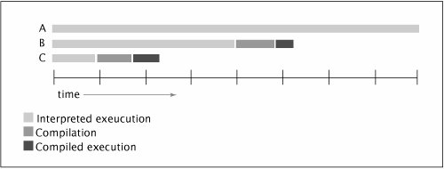

{% include JB/setup %}
{% raw %}
<div>


<a name="ch12lev1sec3" class="calibre18" id="ch12lev1sec3"></a>
<h3 id="647011-901" class="docSection1Title">12.3. Avoiding Performance Testing Pitfalls</h3>
<p class="docText1"><a name="iddle2441" class="calibre18" id="iddle2441"></a><a name="iddle2442" class="calibre18" id="iddle2442"></a><a name="iddle3539" class="calibre18" id="iddle3539"></a><a name="iddle4702" class="calibre18" id="iddle4702"></a><a name="iddle4703" class="calibre18" id="iddle4703"></a><a name="iddle4706" class="calibre18" id="iddle4706"></a>In theory, developing performance tests is easyfind a typical usage scenario, write a program that executes that scenario many times, and time it. In practice, you have to watch out for a number of coding pitfalls that prevent performance tests from yielding meaningful results.</p>
<a name="ch12lev2sec10" class="calibre18" id="ch12lev2sec10"></a>
<h4 id="title-IDAJG5JU" class="docSection2Title">12.3.1. Garbage Collection</h4>
<p class="docText1">The timing of garbage collection is unpredictable, so there is always the possibility that the garbage collector will run during a measured test run. If a test program performs <span class="docEmphasis">N</span> iterations and triggers no garbage collection but iteration <span class="docEmphasis">N</span> + 1would trigger a garbage collection, a small variation in the size of the run could have a big (but spurious) effect on the measured time per iteration.</p>
<p class="docText1">There are two strategies for preventing garbage collection from biasing your results. One is to ensure that garbage collection does not run at all during your test (you can invoke the JVM with <tt class="calibre25">-verbose:gc</tt> to find out); alternatively, you can make sure that the garbage collector runs a number of times during your run so that the test program adequately reflects the cost of ongoing allocation and garbage collection. The latter strategy is often betterit requires a longer test and is more likely to reflect real-world performance.</p>
<p class="docText1">Most producer-consumer applications involve a fair amount of allocation and garbage collectionproducers allocate new objects that are used and discarded by consumers. Running the bounded buffer test for long enough to incur multiple garbage collections yields more accurate results.</p>
<a name="ch12lev2sec11" class="calibre18" id="ch12lev2sec11"></a>
<h4 id="title-IDAEH5JU" class="docSection2Title">12.3.2. Dynamic Compilation</h4>
<p class="docText1"><a name="iddle1392" class="calibre18" id="iddle1392"></a><a name="iddle1393" class="calibre18" id="iddle1393"></a><a name="iddle1394" class="calibre18" id="iddle1394"></a><a name="iddle1976" class="calibre18" id="iddle1976"></a><a name="iddle1977" class="calibre18" id="iddle1977"></a><a name="iddle2658" class="calibre18" id="iddle2658"></a><a name="iddle2659" class="calibre18" id="iddle2659"></a><a name="iddle4705" class="calibre18" id="iddle4705"></a><a name="iddle4899" class="calibre18" id="iddle4899"></a><a name="iddle4900" class="calibre18" id="iddle4900"></a>Writing and interpreting performance benchmarks for dynamically compiled languages like Java is far more difficult than for statically compiled languages like C or C++. The HotSpot JVM (and other modern JVMs) uses a combination of bytecode interpretation and dynamic compilation. When a class is first loaded, the JVM executes it by interpreting the bytecode. At some point, if a method is run often enough, the dynamic compiler kicks in and converts it to machine code; when compilation completes, it switches from interpretation to direct execution.</p>
<p class="docText1">The timing of compilation is unpredictable. Your timing tests should run only after all code has been compiled; there is no value in measuring the speed of the interpreted code since most programs run long enough that all frequently executed code paths are compiled. Allowing the compiler to run during a measured test run can bias test results in two ways: compilation consumes CPU resources, and measuring the run time of a combination of interpreted and compiled code is not a meaningful performance metric. <a class="calibre2" href="#ch12fig05">Figure 12.5</a> shows how this can bias your results. The three timelines represent the execution of the same number of iterations: timeline <span class="docEmphasis">A</span> represents all interpreted execution, <span class="docEmphasis">B</span> represents compilation halfway through the run, and <span class="docEmphasis">C</span> represents compilation early in the run. The point at which compilation runs seriously affects the measured per-operation runtime.<sup class="docFootnote"><a class="calibre2" href="#ch12fn07">[7]</a></sup></p><blockquote class="calibre19"><p class="docFootnote1"><sup class="calibre27"><a name="ch12fn07" class="calibre18" id="ch12fn07">[7]</a></sup> The JVMmay choose to perform compilation in the application thread or in the background thread; each can bias timing results in different ways.</p></blockquote>
<a name="ch12fig05" class="calibre18" id="ch12fig05"></a><p class="calibre21"><div class="calibre12">
<h5 class="docExampleTitle">Figure 12.5. Results Biased by Dynamic Compilation.</h5>
</div></p><p class="docText1">
</p>
<p class="calibre1"> </p>
<p class="docText1">Code may also be decompiled (reverting to interpreted execution) and recompiled for various reasons, such as loading a class that invalidates assumptions made by prior compilations, or gathering sufficient profiling data to decide that a code path should be recompiled with different optimizations.</p>
<p class="docText1">One way to to prevent compilation from biasing your results is to run your program for a long time (at least several minutes) so that compilation and interpreted execution represent a small fraction of the total run time. Another approach is to use an unmeasured "warm-up" run, in which your code is executed enough to be fully compiled when you actually start timing. On HotSpot, running your program with <tt class="calibre25">-XX:+PrintCompilation</tt> prints out a message when <a name="iddle1434" class="calibre18" id="iddle1434"></a><a name="iddle1435" class="calibre18" id="iddle1435"></a><a name="iddle1609" class="calibre18" id="iddle1609"></a><a name="iddle1610" class="calibre18" id="iddle1610"></a><a name="iddle2914" class="calibre18" id="iddle2914"></a><a name="iddle3256" class="calibre18" id="iddle3256"></a><a name="iddle3380" class="calibre18" id="iddle3380"></a><a name="iddle3381" class="calibre18" id="iddle3381"></a><a name="iddle3382" class="calibre18" id="iddle3382"></a><a name="iddle4710" class="calibre18" id="iddle4710"></a><a name="iddle4711" class="calibre18" id="iddle4711"></a><a name="iddle4839" class="calibre18" id="iddle4839"></a><a name="iddle4840" class="calibre18" id="iddle4840"></a><a name="iddle4986" class="calibre18" id="iddle4986"></a>dynamic compilation runs, so you can verify that this is prior to, rather than during, measured test runs.</p>
<p class="docText1">Running the same test several times in the same JVM instance can be used to validate the testing methodology. The first group of results should be discarded as warm-up; seeing inconsistent results in the remaining groups suggests that the test should be examined further to determine why the timing results are not repeatable.</p>
<p class="docText1">The JVM uses various background threads for housekeeping tasks. When measuring multiple <span class="docEmphasis">unrelated</span> computationally intensive activities in a single run, it is a good idea to place explicit pauses between the measured trials to give the JVM a chance to catch up with background tasks with minimal interference from measured tasks. (When measuring multiple related activities, however, such as multiple runs of the same test, excluding JVM background tasks in this way may give unrealistically optimistic results.)</p>
<a name="ch12lev2sec12" class="calibre18" id="ch12lev2sec12"></a>
<h4 id="title-IDAAS5JU" class="docSection2Title">12.3.3. Unrealistic Sampling of Code Paths</h4>
<p class="docText1">Runtime compilers use profiling information to help optimize the code being compiled. The JVM is permitted to use information specific to the execution in order to produce better code, which means that compiling method <span class="docEmphasis">M</span> in one program may generate different code than compiling <span class="docEmphasis">M</span> in another. In some cases, the JVM may make optimizations based on assumptions that may only be true temporarily, and later back them out by invalidating the compiled code if they become untrue.<sup class="docFootnote"><a class="calibre2" href="#ch12fn08">[8]</a></sup></p><blockquote class="calibre19"><p class="docFootnote1"><sup class="calibre27"><a name="ch12fn08" class="calibre18" id="ch12fn08">[8]</a></sup> For example, the JVM can use <span class="docEmphasis">monomorphic call transformation</span> to convert a virtual method call to a direct method call if no classes currently loaded override that method, but it invalidates the compiled code if a class is subsequently loaded that overrides the method.</p></blockquote>
<p class="docText1">As a result, it is important that your test programs not only adequately approximate the usage patterns of a typical application, but also approximate the set of code paths used by such an application. Otherwise, a dynamic compiler could make special optimizations to a purely single-threaded test program that could not be applied in real applications containing at least occasional parallelism. Therefore, tests of multithreaded performance should normally be mixed with tests of single-threaded performance, even if you want to measure only singlethreaded performance. (This issue does not arise in <tt class="calibre25">TimedPutTakeTest</tt> because even the smallest test case uses two threads.)</p>
<a name="ch12lev2sec13" class="calibre18" id="ch12lev2sec13"></a>
<h4 id="title-IDA3S5JU" class="docSection2Title">12.3.4. Unrealistic Degrees of Contention</h4>
<p class="docText1">Concurrent applications tend to interleave two very different sorts of work: accessing shared data, such as fetching the next task from a shared work queue, and thread-local computation (executing the task, assuming the task itself does not access shared data). Depending on the relative proportions of the two types of work, the application will experience different levels of contention and exhibit different performance and scaling behaviors.</p>
<p class="docText1">If <span class="docEmphasis">N</span> threads are fetching tasks from a shared work queue and executing them, and the tasks are compute-intensive and long-running (and do not access shared <a name="iddle1787" class="calibre18" id="iddle1787"></a><a name="iddle1788" class="calibre18" id="iddle1788"></a><a name="iddle4704" class="calibre18" id="iddle4704"></a>data very much), there will be almost no contention; throughput is dominated by the availability of CPU resources. On the other hand, if the tasks are very short-lived, there will be a lot of contention for the work queue and throughput is dominated by the cost of synchronization.</p>
<p class="docText1">To obtain realistic results, concurrent performance tests should try to approximate the thread-local computation done by a typical application in addition to the concurrent coordination under study. If the the work done for each task in an application is significantly different in nature or scope from the test program, it is easy to arrive at unwarranted conclusions about where the performance bottlenecks lie. We saw in <a class="calibre2" href="ch11lev1sec5.html#ch11lev1sec5">Section 11.5</a> that, for lock-based classes such as the synchronized <tt class="calibre25">Map</tt> implementations, whether access to the lock is mostly contended or mostly uncontended can have a dramatic effect on throughput. The tests in that section do nothing but pound on the <tt class="calibre25">Map</tt>; even with two threads, all attempts to access the <tt class="calibre25">Map</tt> are contended. However, if an application did a significant amount of thread-local computation for each time it accesses the shared data structure, the contention level might be low enough to offer good performance.</p>
<p class="docText1">In this regard, <tt class="calibre25">TimedPutTakeTest</tt> may be a poor model for some applications. Since the worker threads do not do very much, throughput is dominated by coordination overhead, and this is not necessarily the case in all applications that exchange data between producers and consumers via bounded buffers.</p>
<a name="ch12lev2sec14" class="calibre18" id="ch12lev2sec14"></a>
<h4 id="title-IDADV5JU" class="docSection2Title">12.3.5. Dead Code Elimination</h4>
<p class="docText1">One of the challenges of writing good benchmarks (in any language) is that optimizing compilers are adept at spotting and eliminating dead codecode that has no effect on the outcome. Since benchmarks often don't compute anything, they are an easy target for the optimizer. Most of the time, it is a good thing when the optimizer prunes dead code from a program, but for a benchmark this is a big problem because then you are measuring less execution than you think. If you're lucky, the optimizer will prune away your <span class="docEmphasis">entire</span> program, and then it will be obvious that your data is bogus. If you're unlucky, dead-code elimination will just speed up your program by some factor that <span class="docEmphasis">could</span> be explained by other means.</p>
<p class="docText1">Dead-code elimination is a problem in benchmarking statically compiled languages too, but detecting that the compiler has eliminated a good chunk of your benchmark is a lot easier because you can look at the machine code and see that a part of your program is missing. With dynamically compiled languages, that information is not easily accessible.</p>
<p class="docText1">Many microbenchmarks perform much "better" when run with HotSpot's <tt class="calibre25">-server</tt> compiler than with <tt class="calibre25">-client</tt>, not just because the server compiler can produce more efficient code, but also because it is more adept at optimizing dead code. Unfortunately, the dead-code elimination that made such short work of your benchmark won't do quite as well with code that actually does something. But you should still prefer <tt class="calibre25">-server</tt> to <tt class="calibre25">-client</tt> for both production and testing on multiprocessor systemsyou just have to write your tests so that they are not susceptible to dead-code elimination.</p>
<a name="ch12sb03" class="calibre18" id="ch12sb03"></a><p class="calibre21"><table cellspacing="0" width="90%" border="1" cellpadding="5" class="calibre5"><tr class="calibre6"><td class="calibre28">
<p class="docText1"><a name="iddle2598" class="calibre18" id="iddle2598"></a><a name="iddle2599" class="calibre18" id="iddle2599"></a><a name="iddle3743" class="calibre18" id="iddle3743"></a><a name="iddle4715" class="calibre18" id="iddle4715"></a>Writing effective performance tests requires tricking the optimizer into not optimizing away your benchmark as dead code. This requires every computed result to be used somehow by your programin a way that does not require synchronization or substantial computation.</p>
</td></tr></table></p><p class="calibre1"> </p>
<p class="docText1">In <tt class="calibre25">PutTakeTest</tt>, we compute the checksum of elements added to and removed from the queue and combine these checksums across all the threads, but this could still be optimized away if we do not actually <span class="docEmphasis">use</span> the checksum value. We happen to need it to verify the correctness of the algorithm, but you can ensure that a value is used by printing it out. However, you should avoid doing I/O while the test is actually running, so as not to distort the run time measurement.</p>
<p class="docText1">A cheap trick for preventing a calculation from being optimized away without introducing too much overhead is to compute the <tt class="calibre25">hashCode</tt> of the field of some derived object, compare it to an arbitrary value such as the current value of <tt class="calibre25">System. nanoTime</tt>, and print a useless and ignorable message if they happen to match:</p>
<div class="docText2"><pre class="calibre36">if (foo.x.hashCode() == System.nanoTime())
    System.out.print(" ");
</pre></div><p class="calibre1"> </p>
<p class="docText1">The comparison will rarely succeed, and if it does, its only effect will be to insert a harmless space character into the output. (The <tt class="calibre25">print</tt> method buffers output until <tt class="calibre25">println</tt> is called, so in the rare case that <tt class="calibre25">hashCode</tt> and <tt class="calibre25">System.nanoTime</tt> are equal no I/O is actually performed.)</p>
<p class="docText1">Not only should every computed result be used, but results should also be unguessable. Otherwise, a smart dynamic optimizing compiler is allowed to replace actions with precomputed results. We addressed this in the construction of <tt class="calibre25">PutTakeTest</tt>, but any test program whose input is static data is vulnerable to this optimization.</p>

<p class="calibre1"> </p>

</div>

{% endraw %}

